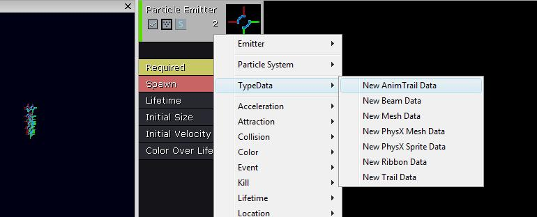
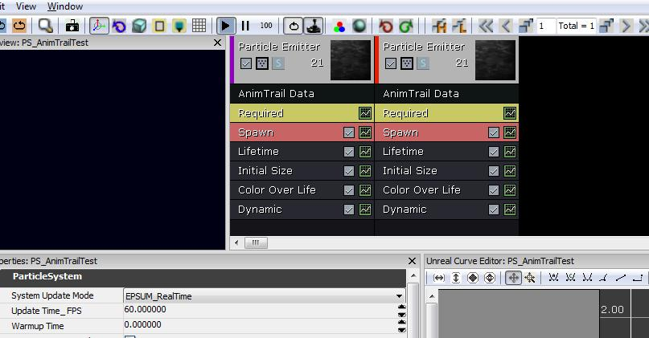
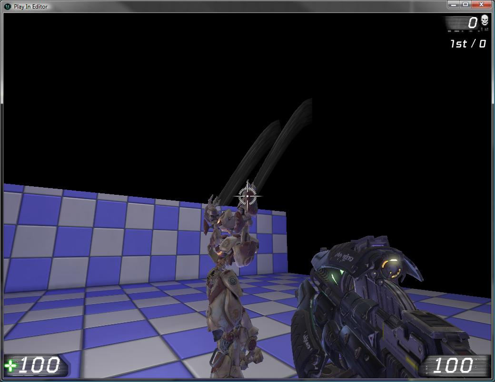

UDN
Search public documentation:
AnimTrailsKR
English Translation
日本語訳
中国翻译
Interested in the Unreal Engine?
Visit the Unreal Technology site.
Looking for jobs and company info?
Check out the Epic games site.
Questions about support via UDN?
Contact the UDN Staff
日本語訳
中国翻译
Interested in the Unreal Engine?
Visit the Unreal Technology site.
Looking for jobs and company info?
Check out the Epic games site.
Questions about support via UDN?
Contact the UDN Staff
파티클 애님트레일 튜토리얼
문서 변경내역: Steven Haines 작성. 홍성진 번역.
소개
샘플 애님트레일 이미터
애님트레일 파티클 이미터 제작하기
파티클시스템 새로 만들기
에디터를 시작하고 콘텐츠 브라우저에서 우클릭, "새 ParticleSystem"을 선택합니다. 패키지 이름, 오브젝트 이름, 팩토리를 물어오는 새로 만들기 창이 뜹니다. 새 파티클 시스템 이름을 짓고 나면 캐스케이드가 열립니다. 새 애님트레일 데이터 노드를 이미터에다가 추가합니다.
'Control Edge Name'(제어 에지명) 필드에다가 'Right_Control'이라고 칩니다. 이게 나중에 스켈레탈 메시에다가 추가시킬 소켓 이름이 됩니다. 'Required' 노드에서, 파티클 용으로 사용될 머티리얼을 할당합니다. (노이즈를 약간씩 주면서 오른쪽으로 이동하는 반투명 라이팅안된 머티리얼을 사용했습니다.)
양팔에 애님트레일을 만들어야 하니, 이미터를 복제한 새로 생긴 이미터의 'Control Edge Name'을 'Left_Control'로 바꿉니다.
'Required' 노드에서, 파티클 용으로 사용될 머티리얼을 할당합니다. (노이즈를 약간씩 주면서 오른쪽으로 이동하는 반투명 라이팅안된 머티리얼을 사용했습니다.)
양팔에 애님트레일을 만들어야 하니, 이미터를 복제한 새로 생긴 이미터의 'Control Edge Name'을 'Left_Control'로 바꿉니다.

소켓 셋업하기
스켈레탈 메시의 팔에 있는 애니메이션 소켓을 셋업합니다. 각 트레일에는 소켓이 셋 필요합니다. 첫 에지에 하나, 둘째 에지에 하나, 제어점에 하나 입니다. 첫째와 둘째 에지 소켓은 렌더링되는 트레일의 두 에지를 정의합니다. 제어점은 트레일상의 텍스처 좌표값을 정하는 데 사용됩니다. 참고로 소켓 추가법에 대해서는 Skeletal Mesh Sockets KR 페이지를 참고하시기 바랍니다. 이 예제에서는 첫 에지에 WeaponPoint 소켓을 사용하겠습니다. 그리고서 둘째 에지와 양팔에 대한 제어점용 소켓을 만듭니다. 최종 결과는 아래와 같습니다:
애님노티파이 추가하기
애님노티파이는 각 팔에 하나씩, 둘 필요합니다. 얘들은 애님셋 에디터의 애님시퀸스 탭에 추가됩니다. 새 노티파이를 추가하고, 파랑 화살표를 클릭한 다음 AnimNotify_Trails 를 추가합니다. 각 팔에 대해 애님노티파이가 필요합니다. 각 노티파이가 애님시퀸스에 맞도록 시간과 기간을 설정합니다. 이 예제에서는 점프한 다음 땅을 내려찍는 애니메이션을 사용하고 있습니다. 애님트레일이 점프 정점에서 시작한 다음 캐릭터가 착지하면 정지하게 하고 싶습니다.
다음, 만든 소켓에 이름을 채워 넣습니다. 이와 같아 보입니다:
각 팔에 대해 애님노티파이가 필요합니다. 각 노티파이가 애님시퀸스에 맞도록 시간과 기간을 설정합니다. 이 예제에서는 점프한 다음 땅을 내려찍는 애니메이션을 사용하고 있습니다. 애님트레일이 점프 정점에서 시작한 다음 캐릭터가 착지하면 정지하게 하고 싶습니다.
다음, 만든 소켓에 이름을 채워 넣습니다. 이와 같아 보입니다:
 트레일을 보려면 애님셋 에디터의 'Notifies' 메뉴에서 '모든 PSys 미리보기 켜기'를 선택하여 PSys 미리보기를 켜고 애님시퀸스를 재생합니다.
또는 스켈레탈 메시를 레벨에 놓고 애님시퀸스를 재생할 캐릭터를 설정해 줍니다. PIE로 실행시켜 효과를 미리봅니다.
트레일을 보려면 애님셋 에디터의 'Notifies' 메뉴에서 '모든 PSys 미리보기 켜기'를 선택하여 PSys 미리보기를 켜고 애님시퀸스를 재생합니다.
또는 스켈레탈 메시를 레벨에 놓고 애님시퀸스를 재생할 캐릭터를 설정해 줍니다. PIE로 실행시켜 효과를 미리봅니다.
